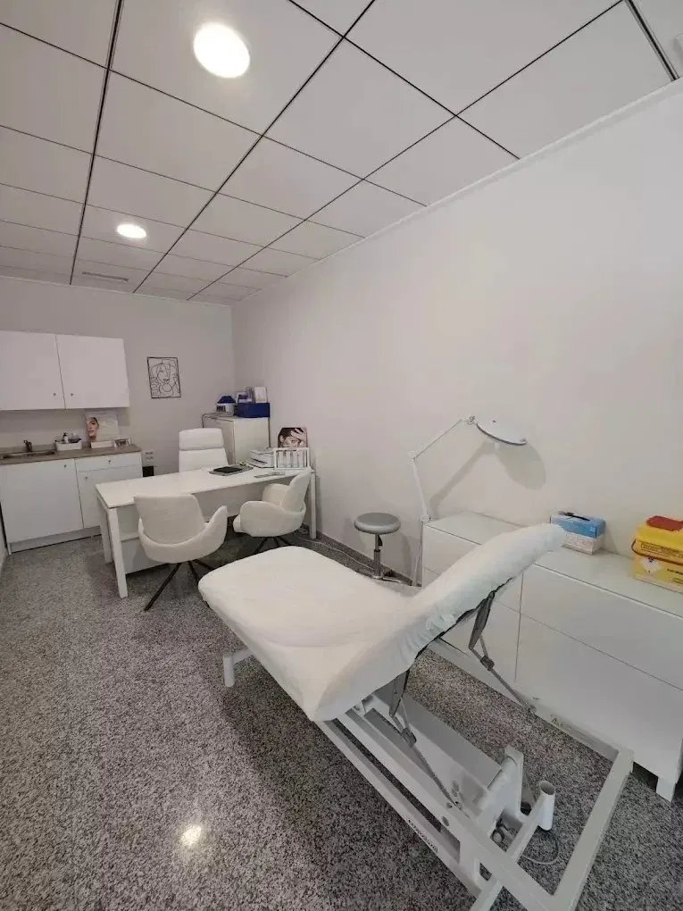

Clínica Dra. Laura Bernal
Medicina estética y medicina de precisión · Murcia

Clínica propia especializada en medicina estética con un enfoque diferenciador: la integración de medicina de precisión basada en genética.
Medicina Estética
Tratamientos faciales y corporales personalizados: neuromoduladores (toxina botulínica), rellenos de ácido hialurónico, hidratación profunda, restitución de volúmenes, tratamiento de líneas de expresión, flacidez y envejecimiento cutáneo.
Cada tratamiento se diseña de forma individualizada según las características, necesidades y objetivos de cada paciente, con un enfoque integral que va más allá del resultado estético inmediato.
Lo que nos diferencia: Medicina de Precisión
Incorporación de tests genéticos aplicados a nutrigenética y envejecimiento cutáneo para orientar y personalizar los tratamientos según el perfil biológico individual de cada paciente.
Actualmente desarrollando protocolos de tratamiento basados en genómica para sistematizar este enfoque de precisión, integrando biomarcadores y datos genéticos en la toma de decisiones terapéuticas.
Este enfoque permite identificar predisposiciones genéticas al envejecimiento, respuesta a tratamientos y necesidades nutricionales específicas, optimizando los resultados y personalizando cada intervención.
Áreas de tratamiento
Medicina Estética Facial
- Neuromoduladores (toxina botulínica) — líneas de expresión y arrugas dinámicas
- Rellenos de ácido hialurónico — volumen, definición y proyección
- Hidratación profunda y bioestimulación
- Restitución de volúmenes perdidos
- Lifting no quirúrgico
- Tratamiento integral del envejecimiento facial
Medicina Estética Corporal
- Tratamientos de flacidez corporal
- Reafirmación y tonificación
- Protocolos personalizados según zona y objetivo
- Enfoque integral cuerpo-mente
Medicina de Precisión Aplicada
- Tests genéticos de envejecimiento cutáneo
- Nutrigenética aplicada a estética
- Perfil biológico individual del paciente
- Protocolos personalizados basados en genómica
- Integración de biomarcadores en la toma de decisiones
- Seguimiento evolutivo con datos objetivos
¿Quieres saber más?
Consulta sin compromiso para valorar tu caso de forma personalizada.
Contacta con la clínica